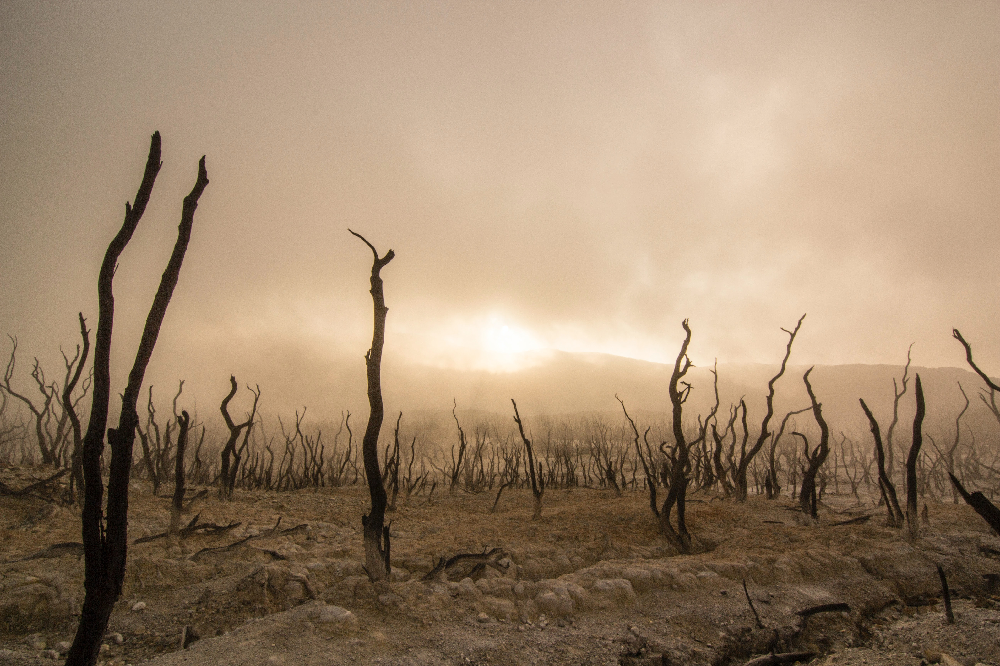

Desencarne
A existência terrena é delimitada por dois extremos: o nascimento e a morte.
Os homens preocupam-se muito com esse instante.
Enxovais são preparados, quartos são arrumados, as famílias se engalanam para receber seus novos membros.
Isso é bom e correto, pois o ressurgimento na esfera carnal constitui uma bendita oportunidade de trabalho e progresso para aquele que nasce e para a família que o recebe.
Em geral, não se trata exatamente de um novo membro, mas de um antigo e querido companheiro de lutas que retorna.
Já o que se chama morte é o retorno do Espírito ao seu ambiente de origem.
Todo homem é um Espírito que habita temporariamente um corpo.
O organismo físico se desgasta, envelhece, adoece e morre.
Mas o Espírito vive e evolui para sempre.
A verdadeira pátria corresponde ao plano espiritual.
Toda existência terrena é eminentemente transitória.
Estranhamente, ao contrário do que se dá com o nascimento, em regra há pouco preparo para o fenômeno da morte, ou desencarnação, como chamamos.
Esse tema é envolto em tabus e fantasias, como se não fosse algo natural.
E constitui um fato inexorável.
Toda criatura, mais cedo ou mais tarde, verá seu corpo físico perecer.
Por ser um fenômeno natural, deve ser tratado com naturalidade e calma.
Como todos morrerão um dia, nenhuma separação é definitiva.
O ente querido que morre apenas retorna antes ao verdadeiro lar.
Embora se trate de algo natural, isso não implica negar a sua gravidade.
Ao nascer, o Espírito traz uma programação de vida, voltada ao seu progresso e burilamento.
Integre-se às belezas do seu mundo e valorize-o. Afinal você é parte dele!
Ao término da existência, ele faz um balanço de seu comportamento, de suas vitórias e fracassos.
O momento do encontro com a própria consciência pode ser terrível ou maravilhoso.
Tudo depende do comportamento adotado durante a existência terrena.
O corpo físico amortece enormemente as percepções e os sentimentos do Espírito.
Após a desencarnação, tudo se torna muito mais vívido.
A alegria de um Espírito pelo dever bem cumprido possui uma intensidade inimaginável para quem permanece vinculado à matéria.
Mas também o remorso e a vergonha que experimenta por erros cometidos atingem proporções lancinantes.
A ingenuidade humana muitas vezes afirma que a pessoa descansa ou se liberta ao morrer.
Mas é difícil avaliar o que significa esse pretenso descanso para quem se permitiu semear dores e misérias na vida alheia.
Do mesmo modo, quem gastou o tempo enredando-se em vícios e maldades não experimenta qualquer libertação ao término da existência.
Quem morre não vai para o céu e nem para o inferno.
O céu e o inferno são estados de consciência, que cada qual cria para si com o próprio proceder.
A cada um conforme as suas obras, disse o Mestre Divino.
A lição é cristalina e não permite enganos.
O fenômeno da morte é natural, mas muito grave.
Ele constitui um momento de balanço, de aferição de méritos ou deméritos.
Assim, importa tratar do tema com serenidade e maturidade.
Não há qualquer milagre ou favor envolvido.
Para passar com tranquilidade por esse momento, importa viver reta e dignamente.
Pense nisso.
~Mensagem recebida em: 03/11/2020
~ Redação do Momento Espírita, com base no cap. 30, do livro Para uso diário, do Espírito Joanes, psicografia de Raul Teixeira, ed. Fráter.